РоссияКод
Claude Fable 5 собрал браузерную игру одним промптом — и сам заложил в неё медиаэтику
Один промпт, ноль строк кода вручную — и готовая игра с моралью про ИИ-журналистику
Habr AI
11 июн.Российский рынок ИИ: государственная политика, отечественные модели, кейсы компаний и академические достижения.
209 материалов
Один промпт, ноль строк кода вручную — и готовая игра с моралью про ИИ-журналистику
Как объединить слои нейросети через межбатчевую связь и приблизиться к биологическим нейронам?
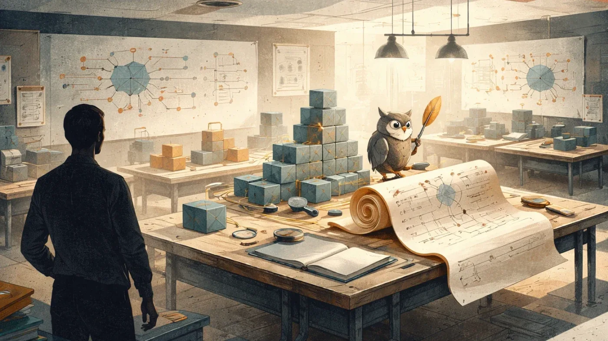
Почему «Финист — ясный сокол» объясняет prompt injection лучше любого курса
Mustash — open-source утилита для создания умных плейлистов из избранного Spotify с настраиваемыми правилами.
Почему RAG ломается в продакшене и как это починить конкретной инженерной работой
Каждая четвёртая российская компания уже запустила ИИ в облаке — что их туда привело
Дипфейки по текстовому запросу, фишинг через мессенджеры и 499 инвестиционных ловушек — итоги I квартала 2026
Дефицит 50 тысяч безопасников — и месяцы отказов. Что сломалось в найме и как с этим жить
LLM в корпоративной шине: как redb.Route 3.1.1 убирает отдельную ИИ-инфраструктуру
SEO-топ и источники нейросетей почти не пересекаются — исследователи вскрыли трафик и объяснили почему
Рабочий проект переписали с нуля — не из-за багов, а потому что команда разучилась думать самостоятельно
Claude пишет 80% кода Anthropic, PyPI пропал в России, GitHub тонет в ИИ-PR — главное за неделю
Как дообучить FLUX.2 [klein] под свой стиль за $0.50 и один час — пошаговый разбор
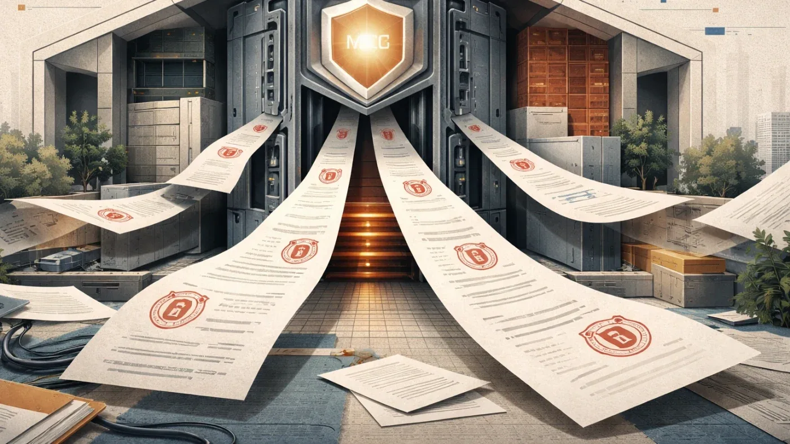
Как 1С научили работать с ИИ: MCP-сервер, права доступа и агент прямо в интерфейсе
3D-подруга в браузере за ноль рублей: как устроен аватар на Gemini API и Three.js
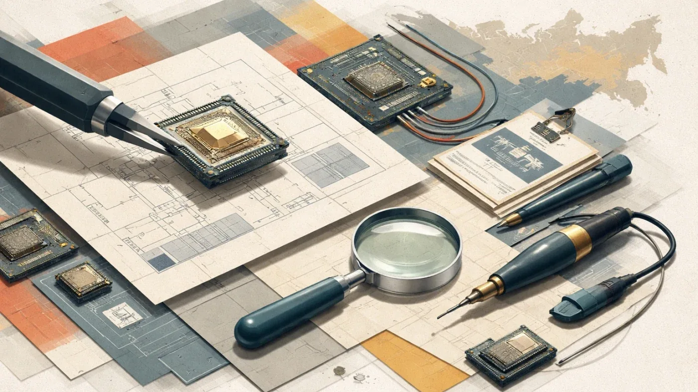
ФПИ получил права на российский тензорный чиплет: это IP-задел, а не готовый серийный ускоритель.
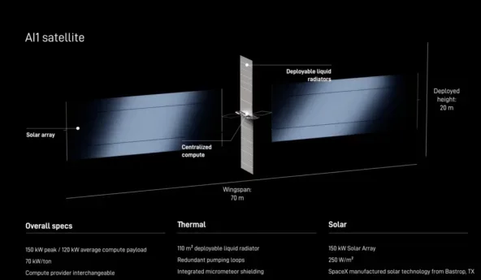
Илон Маск презентовал спутник AI1: орбитальные дата-центры с чипами Nvidia и мощностью 150 кВт
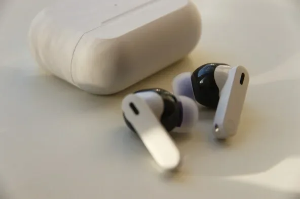
«Алиса» записала PIN-код карты и выдала его по хитрому запросу — тест первых наушников «Яндекса»
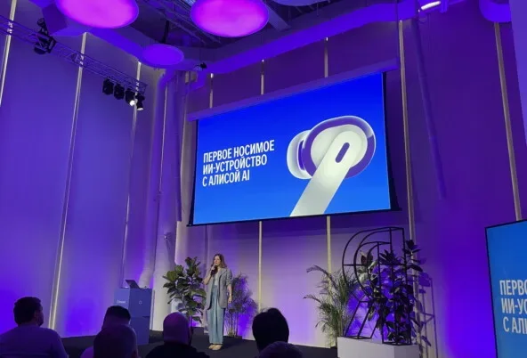
Первые наушники «Яндекса» с «Алисой» — что умеет ИИ-ассистент в ухе и чего пока не может
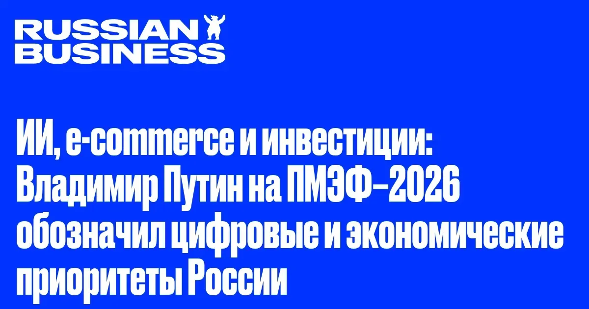
Путин на ПМЭФ-2026: 30% роста e-commerce, стратегии ИИ и IT-суверенитет — что решили для цифровой экономики
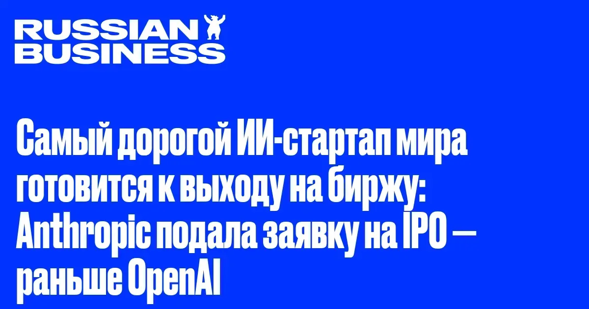
Anthropic оценили в $965 млрд и подали заявку на IPO — раньше OpenAI. Что стоит за этим ростом?

Китай закрывает ИИ-таланты внутри страны — что стоит за новыми правилами и делом Manus
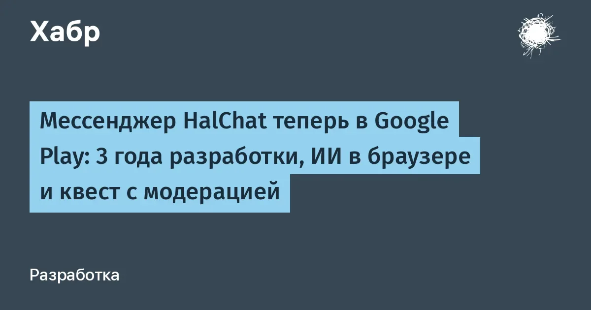
Один разработчик три года строил мессенджер с ИИ без внешних серверов — и наконец пробился в Google Play
Гендиректор Standard Chartered назвал увольняемых «менее ценным капиталом» — и пожалел об этом

Карманный Linux-компьютер с ИИ-ускорителем от создателей Flipper Zero — что умеет Flipper One
Meta увольняет 8000 и одновременно переводит 7000 в ИИ — что происходит внутри компании
«Сбер» анонсировал запуск коммуникационной платформы с ИИ-помощником к 2027 году и назвал целевые доли рынка.
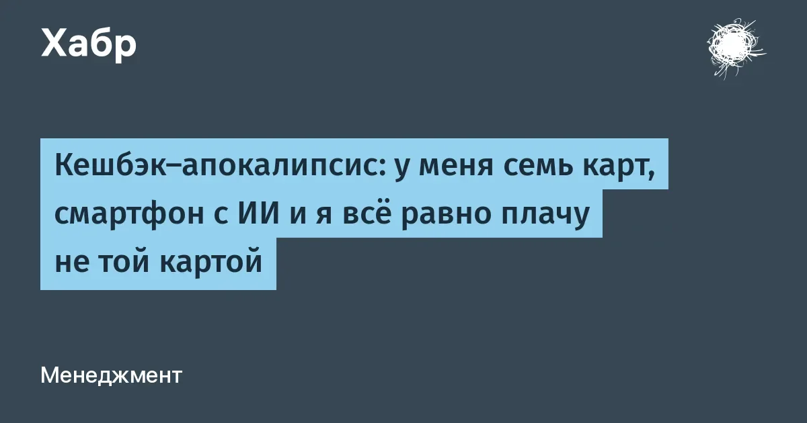
6–8 карт в кошельке — и всё равно платишь не той. Как с этим борется Cashmate
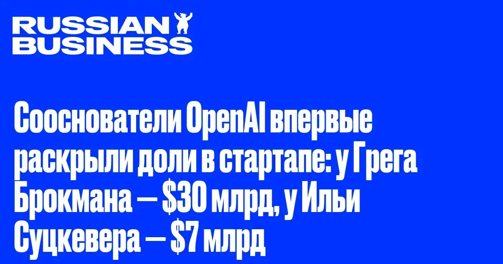
Брокман — $30 млрд, Суцкевер — $7 млрд: суд вскрыл доли сооснователей OpenAI